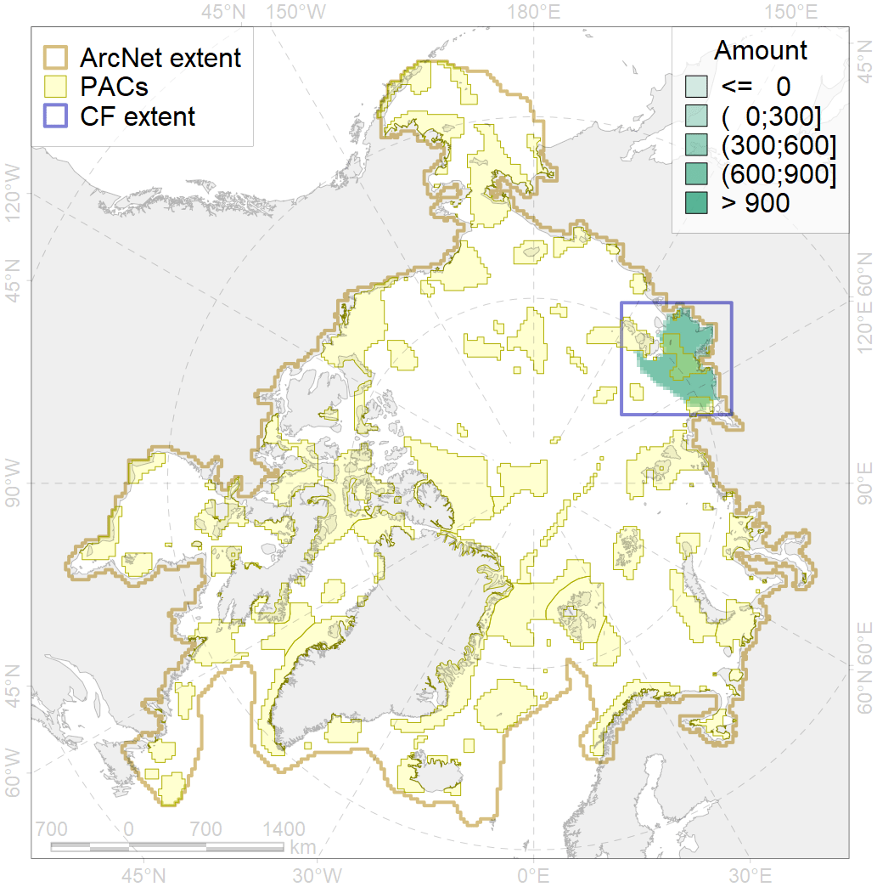

4095

| CF ID | 4095 |
| CF Name | Estuarian (Taymyr-Lena) brackish –water fish complex; |
| Time Period | 2019 |
| Source(s) | Chernova |
| Seasonality | January-December |
| Depth Horizon | |
| Methodology | expert opinion based on multiple publications |
| Author Name | N. Chernova |
| Notes | |
| Conservation Target Set in the Scenario | 0.06 |
| Conservation Target Achieved in the Scenario | 0.293 (Scenario: 487.9%) |
| PAC ID | Proportion in the PAC | Contribution to ArcNet Target Achievement | PAC’s Contribution to the Achieved Target |
|---|---|---|---|
| 12 | 23.6% | 352.4% | 72.2% |
| 13 | 4.7% | 74.6% | 15.3% |
| inner | 28.3% | 427.0% | 87.5% |
| outer | 71.7% | 60.9% | 12.5% |